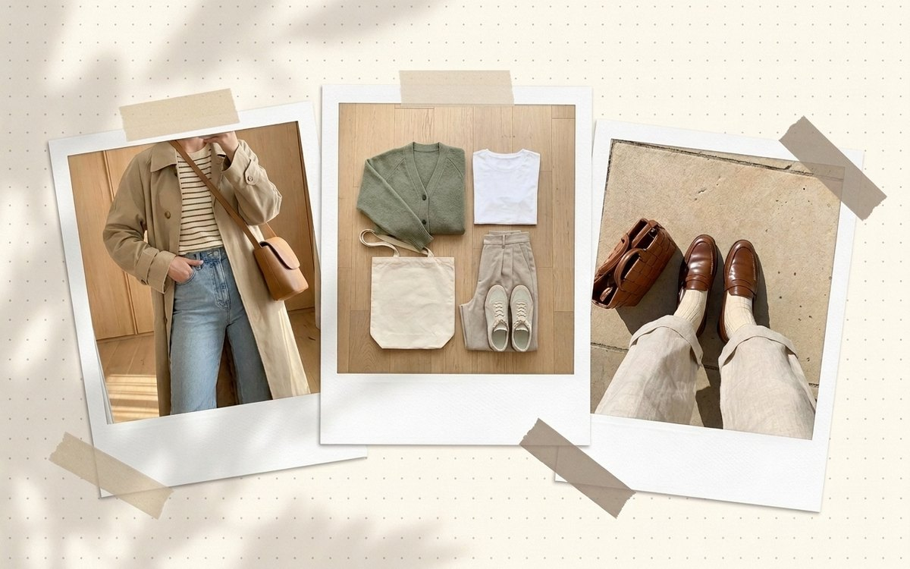
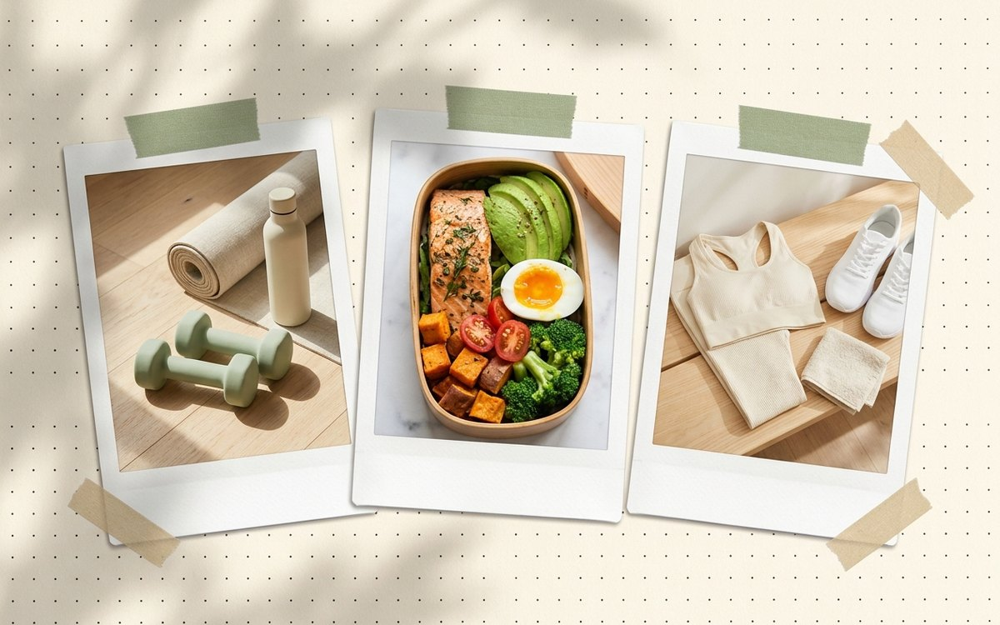

🌱 免費就能用
IDEA 13
👗 每日穿搭 OOTD 月曆
「每天出門都在想昨天穿過什麼、這件外套上次怎麼搭，相簿卻混雜一堆截圖…」
選乾淨的純白相紙、不加多餘裝飾，出門前對鏡拍一張就好。一個月下來自動排成整面清爽的穿搭月曆，換季找靈感一眼就看到。
📅 自動月曆🖼️ 乾淨相紙卡片🔐 只存本機相簿
不是每張照片都要發上網。穿搭紀錄、減脂便當、下班路上的夕陽——放在只屬於你手機與 iCloud 的安靜角落，每天一格慢慢填滿。


🌱 免費就能用「每天出門都在想昨天穿過什麼、這件外套上次怎麼搭，相簿卻混雜一堆截圖…」
選乾淨的純白相紙、不加多餘裝飾，出門前對鏡拍一張就好。一個月下來自動排成整面清爽的穿搭月曆，換季找靈感一眼就看到。

🌱 免費就能用「純文字打卡表太冷冰冰，寫不到一週就懶得開了…」
每天拍一張自己煮的原型便當、或是運動完流汗的瞬間，看月曆一天填滿一格超有成就感！不用輸入熱量數字，不知不覺就撐過 30 天。
「想記錄生活，但一想到要配文案、顧忌誰會看到，就懶得拍了。」
沒有公開動態、不用註冊帳號，也沒人看得到。下班路上的橘色夕陽、一杯熱拿鐵、讀完的一本書，拍一下就收進只屬於你的溫柔小角落。
Not every moment is meant for a public feed. Daily outfits, workout check-ins, and sunset commutes stay privately on your iPhone and iCloud.
“I never remember how I styled that jacket last month, and my camera roll is full of screenshots.”
Pick a clean white card frame, snap a quick mirror check before heading out, and watch a crisp monthly outfit calendar fill in all by itself.
“Spreadsheets and calorie trackers feel like homework—I always quit after a week.”
Snap your healthy lunch box or post-run sneakers instead. Watching each square on your calendar light up with a real photo makes 30-day streaks feel joyful.
“I want to remember ordinary days, without writing captions or performing for a feed.”
No signup, no followers, zero pressure. An amber sunset on your walk home, a warm latte, or a finished paperback—snap once and tuck it into your private sanctuary.
SNS に載せるほどじゃない日常こそ、あとから宝物になります。コーデ・食事・仕事帰りの夕焼けを、自分だけの安心な場所へ。
「昨日なにを着たか思い出せないし、カメラロールはスクショだらけ…」
シンプルな白フレームで出かける前に鏡の前で 1 枚。1 ヶ月たつと、見やすいコーデカレンダーが自動で完成。季節の変わり目にも大活躍します。
「数字ばかりの記録アプリは続かない。もっと気楽に続けたい…」
作ったお弁当やランニング後のスニーカーを 1 枚撮るだけ。カレンダーのマスが写真で少しずつ埋まっていくのが楽しくて、気づけば 30 日続きます。
「投稿する文章を考えるのがめんどうで、結局なにも残せなくなってしまう。」
アカウント不要・公開フィードなし。帰り道の夕焼け、あたたかいラテ、読み終えた本——誰にも見られない自分だけの静かな手帳にそっとしまえます。
모든 사진이 피드에 올라갈 필요는 없으니까요. 데일리룩, 식단·오운완, 퇴근길 노을까지 내 폰과 iCloud에만 조용히 차곡차곡 모아보세요.
“어제 뭐 입었는지 헷갈리는데, 앨범엔 캡처 사진만 가득해서 찾기 힘들어요.”
깔끔한 화이트 프레임으로 외출 전 거울 앞에서 한 장만 찍어두세요. 한 달이 지나면 깔끔한 나만의 코디 달력이 저절로 완성됩니다.
“숫자만 적는 기록 앱은 너무 딱딱해서 일주일도 못 가고 포기하게 돼요.”
건강한 도시락 한 끼, 운동 끝난 뒤 운동화 한 컷만 찍어두세요. 달력 칸이 사진으로 하나씩 채워지는 재미에 어느새 30일 루틴이 완성돼요.
“남들 시선 신경 쓰며 글 쓰기 귀찮아서, 결국 하루 기록을 안 하게 돼요.”
가입도 공개 피드도 없어요. 퇴근길 노을, 따뜻한 라떼 한 잔, 다 읽은 책 한 권을 셔터 한 번으로 오직 나만의 아늑한 공간에 담아두세요.